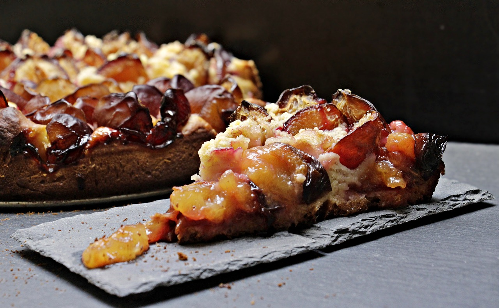
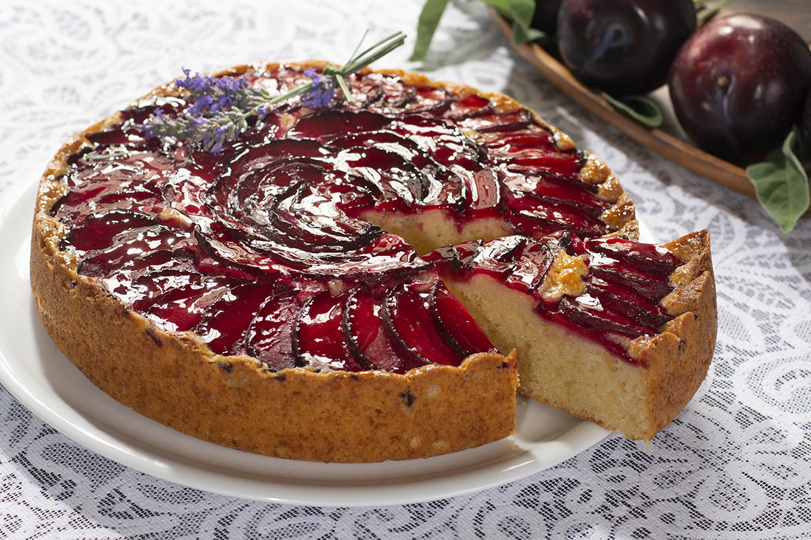

Pastel de ciruela
Ingredientes:
- -Ciruelas (aproximadamente 500 g, deshuesadas y cortadas)
- -Harina de trigo
- -Azúcar
- -Huevos
- -levadura
- -mantequilla
- -leche
Modo de preparación resumido:
- -Mezclar huevos, azúcar y mantequilla derretida.
- -Agregar harina y levadura tamizadas, alternando con leche.
- -Incorporar la esencia de vainilla si se prefiere.
- -Verter la masa en un molde y distribuir las ciruelas en la superficie.
- -Hornear hasta que el pastel esté dorado y al insertar un palillo, este salga limpio
- ¡Ahora tienes un delicioso pastel de ciruela! Ajusta los ingredientes según tus preferencias y disfruta.